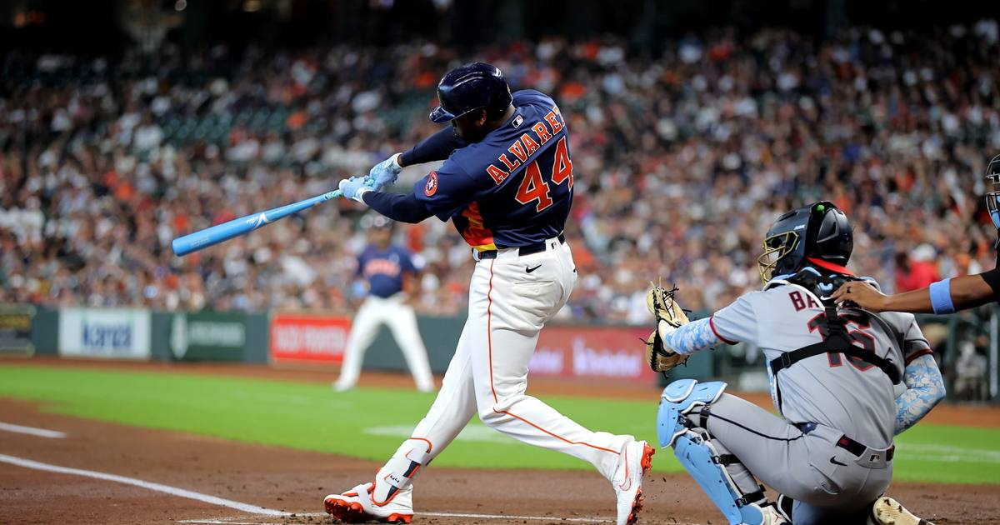

Yordan Alvarez wins the 2026 AL MVP — unanimously
All 30 first-place votes — Yordan Alvarez is the 2026 AL MVP after the best season of his career.

Disclosure: this post contains affiliate links. I earn a commission on qualifying purchases.
Unanimous
There was no debate. Yordan Alvarez is the 2026 American League MVP, and every single BBWAA voter agreed — all 30 first-place votes, announced Thursday night. Junior Caminero finished second. Bobby Witt Jr. was third.
At 29, the Houston Astros slugger put together the best season of his career: .316/.432/.601 with 42 home runs, 106 RBIs, 105 runs, 34 doubles, a triple, 109 walks and a 1.033 OPS across 158 games — a career high — and 692 plate appearances. It was his first 40-homer season, and the numbers only get more absurd from there.
The best hitter in baseball, by every measure
He didn't just win his first batting title — edging Chandler Simpson's .306 — he led the American League in average, on-base percentage, slugging, OPS, total bases, walks, extra-base hits, wRC+ and OPS+. The totals behind those leads: 341 total bases, 77 extra-base hits, a 181 wRC+ and a 190 OPS+. He drew 33 intentional walks, an Astros franchise record and three shy of Aaron Judge's AL record of 36 from last year. And he was the only player in the majors all season with an OPS over 1.000.
Put simply: there was no category that mattered where he wasn't first or right there.
One short of history
He flirted with the Triple Crown all September — one homer shy of the league lead, second in RBIs. The batting title was the piece that actually landed, and it made him just the third Astro ever to win one, after Yuli Gurriel in 2021 and Jose Altuve in 2014, 2016 and 2017. His 6.8 fWAR ranked third in the majors.
The comeback
A year ago, none of this was a given. Injuries limited him to 48 games in 2025. On Wednesday night, at MLB Honors, he was named the AL Comeback Player of the Year — the night before the MVP announcement turned the comeback story into a clean sweep.
Astros history
He's the third Astro to win a BBWAA MVP, joining Jeff Bagwell (1994) and Jose Altuve (2017). Two of the three won it in the last decade, and both of them did it by being the most feared hitter in the league. Alvarez fits right in.
Watch
Source: Every 2026 Yordan Alvarez Homerun — MLB. Every home run from the MVP season, back to back.
Sources
• Yordan Alvarez Wins AL MVP Award — MLB Trade Rumors
• Astros slugger Alvarez wins AL MVP — ESPN Southwest Louisiana
• Staff Awards: MVP, Cy Young, ROY Vote — Just Baseball (fWAR / Triple Crown context)
• Pitcher List Award Predictions — Pitcher List (Comeback Player of the Year)
Gear up: Fanatics